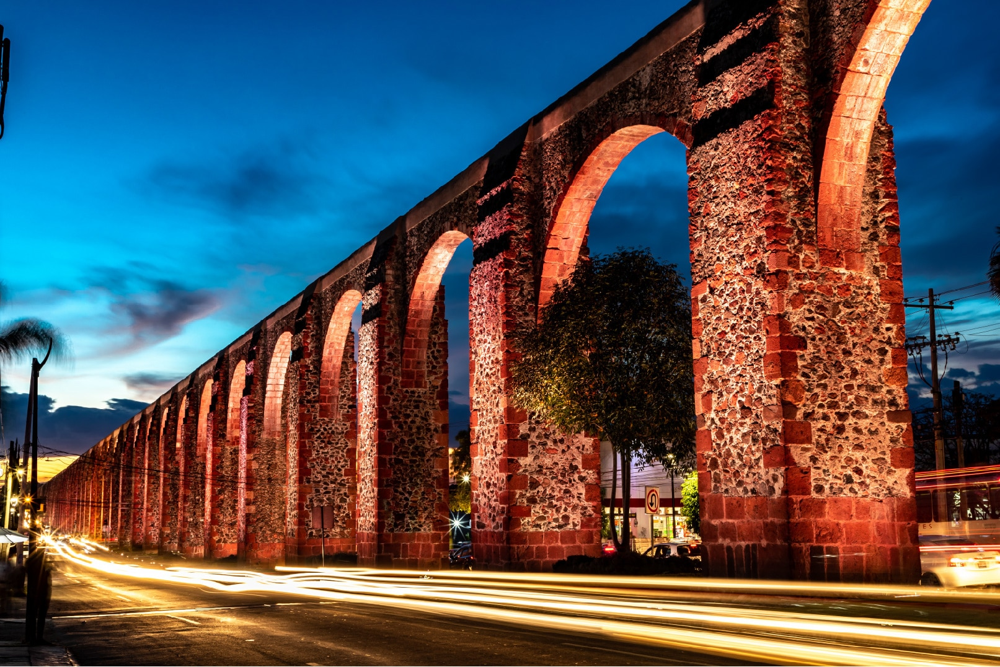
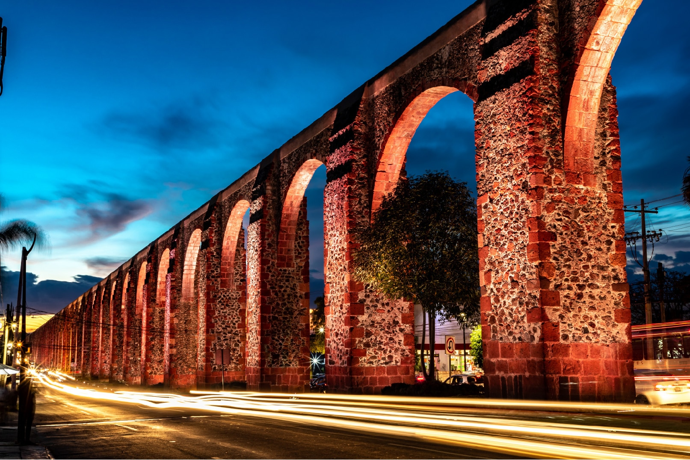

Mi Historia
¿Quién soy?
Mi nombre es Camila Michelle Sánchez Breña, nací en Querétaro el 11 de Enero del 2006. Mis padres son Guadalupe Breña Basaldua y Edagar Sánchez Alvarez, Tengo una hermana llamada Maria Fernanda Sánchez Breña y ella es de la Cuidad de México porque mi papá es de haya, En mi familia por parte de mi mamá es de Querétaro y por parte de mi papá es de México.
 

Mi Educación
Las escuelas a las que he ido son:
- <Kinder> Cuando tenia 3 años entre al kinder y ahi aprendi hacer muchas cosas.
- <Primaria> A los 6 años entre a la primaria y ahi tuve muchas excusiones con mis amigos, ya que, fui a planetarios, parques, tambien una vez fui a la feria, aqui tambien aprendi a cantar, dibujara y pintar,
- <Secundaria> En la secundaria fui al Instituto Cambridge, y aqui aprendi Taekwondo, bailar folklorico y aqui me llevaron a competencias de danza folklorica, estuve en competencias y en teatros.
- <Preparatoria> En la preparatoria actualmente estoy en el Instituto Cambridge estudiando Programación, ya que, siempre me ha interesado todo lo de la tecnologia, ademas aqui aprendi a actuar.
Hobbies
- <Actuar> Una de las cosas que me gusta hacer es actuar, esto debido a que desde niña me ha gustado ver novelas y desde ahi me ha actuar y por eso es una de las cosas que quisiera desarrollar pofesionalmente despues de estudiar una Ingenieria